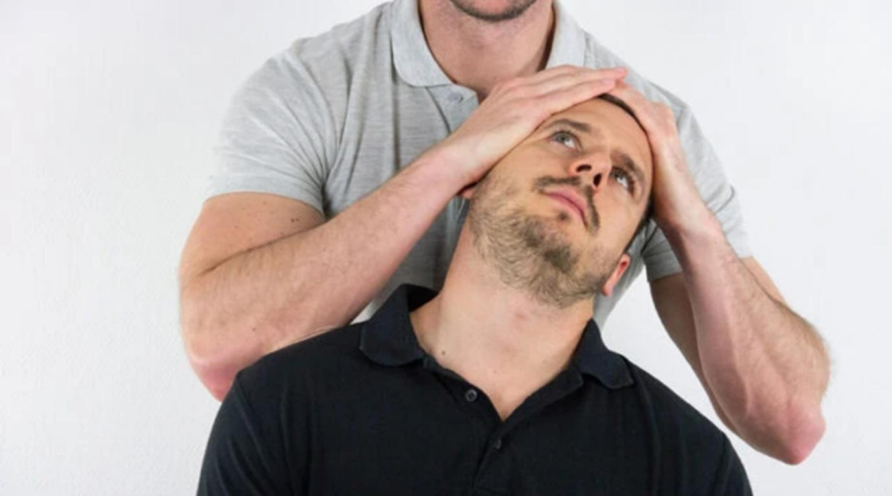

Neck Pain (Version 1)
CASE STEM
Your next patient is a 40 year old lady who has presented to your General Practice complaining of neck pain for 2 days.
Task:
- Take history from the patient - you will have a prompt time at 6 minutes
- Physical examination will appear on the screen at 6 minutes
- Explain your diagnosis and differentials to the patient
- (Investigation has been asked in some exams)
Exam-Focused Differential Framework
Four Groups
1. Spine
- Mechanical / non-specific neck pain
Vertebral dysfunction - Cervical radiculopathy
- Vertebral fracture
2. Red Flags
- Cervical myelopathy
- Malignancy & metastasis
- Infection
- Multiple myeloma (elderly)
3. Arthritis
- Osteoarthritis (cervical spondylosis)
- Rheumatoid arthritis
- Psoriatic arthritis
- Ankylosing spondylitis
- Reactive arthritis
4. Referred Pain
- Head
- Meningitis
- Tension headache
- Subarachnoid hemorrhage
- Meningitis
- Cardiovascular
- Angina
- MI
- Ischemic heart disease
- Angina
- Shoulder
- Polymyalgia rheumatica
- Rotator cuff disorders
- Polymyalgia rheumatica
KEY CONDITION REVISION
Cervical Myelopathy
- Midline disc herniation
- Compresses entire spinal cord
- Red flag – needs urgent decompression
- Features (in legs)
- Walking difficulty
- Balance issues
- Leg pain
- Weakness
- Incontinence
- Walking difficulty
Cervical Spondylosis
- Degenerative disc & joint disease
- Osteophytes
- Same as osteoarthritis
- Worse in morning
- Improves with movement
- Worse with heavy activity
Cervical Radiculopathy
- Nerve root compression
- Causes:
- Disc prolapse
- Tumor
- Osteophytes (spondylosis)
- Disc prolapse
- Key feature: neurological deficit
Spinal Metastasis
- Occurs in ~10% of cancer patients
- Cervical spine = 15%
- Most common:
- Breast
- Prostate
- Lung
- Breast
HISTORY-TAKING STRUCTURE
Opening
Doctor:
“How can I help you today?”
Patient:
“I’ve had neck pain for two days, it’s on the back of my neck, it’s so bad I can’t sleep and I’m worried.”
Doctor response (communication skill)
“I understand your concern. You did the right thing coming in. I’ll ask a few questions and examine you to find the cause.”
Block 1 – Explore the Pain
SIQORAA
Site
- Front or back of neck?
Intensity
- “On a scale of 1–10, how bad is the pain?”
Quality
- Dull / sharp / burning?
Onset
- When did it start?
- Continuous or on / off?
- Getting worse?
- First episode or previous?
Radiation
- Does it travel anywhere?
Alleviating & Aggravating
- What makes it better or worse?
- Coughing or sneezing?
Activity impact
- Work and daily activities?
Pattern
- Night pain?
- Worse in the morning or end of day?
- Worse after activity or rest?
Block 2 – General Musculoskeletal
- Swelling around that area?
- Redness?
- Rashes?
- Stiffness (must ask)
- Recent trauma or injury?
Block 3 – Red Flags
Cervical Myelopathy
- Difficulty walking?
- Balance problems?
- Loss of bladder or bowel control?
- Leg weakness, numbness, pain?
Malignancy
- Weight loss?
- Loss of appetite?
- Lumps and bumps?
- Have you been feeling tired or Fatigue?
- Previous cancers?
- Long-term cough?
- Previous history of Breast lumps?
Infection
- Fever?
- Chills?
Block 4 – Spine Differentials
Mechanical Neck Pain
- Occupation?
- Does your job involve Repetitive neck movements?
- Any Excessive exercise u have been doing lately?
Cervical Radiculopathy
- Pins and needles in hands?
- Numbness?
- Weakness in moving his arms and legs?
Block 5 – Arthritis
Osteoarthritis
- Any grating or cracking sound when u move your neck
Rheumatoid Arthritis
- Other joint pain?
- Family history?
Psoriatic
- Rashes on elbows or knees?
Ankylosing Spondylitis
- Any Stiffness or Difficulty moving your neck?
Reactive Arthritis / IBD
- Diarrhea?
- Blood in stool?
- Genital discharge?
- STI?
Block 6 – Referred Pain
Head
- Headache?
- Neck radiation?
- Stress?
Meningitis
- Are you having any sensitivity to light (Photophobia)?
- Vomiting?
Cardiac
- Chest pain?
- Shortness of breath especially on exercise?
- Do you have any racing of your heart; Palpitations?
Polymyalgia rheumatica
- any pain or stiffness in shoulder and hips?
Block 7 – Closure
- Smoking
- Alcohol
- Drugs
- Medications (steroids, cholesterol drugs)
- Allergies
- Past medical history
- Family history
HISTORY FINDINGS
- Pain on the back of the neck
- After painting her house
- Radiates to the right arm
- Also feeling tingling and numbness in her hand
- No redflags
→ Diagnosis: Cervical radiculopathy
PHYSICAL EXAMINATION
- Limitation & restriction of neck movements on rotation and lateral flexion due to pain
- Decreased sensation on thumb and outer forearm
- Weak elbow flexion
Spurling Test

- Lateral flexion + axial compression
- Reproduces arm pain
- Suggests cervical radiculopathy
DIAGNOSIS EXPLANATION
“You most likely have cervical radiculopathy.
This means a nerve exiting your spine is under pressure, usually from a tear in a cushion-like structure called a disc.
I think this because:
- Your pain goes into the arm
- You have numbness
- I found weakness and sensory loss on examination.”
INVESTIGATIONS
Two key investigations
- Cervical spine MRI
- Cervical spine X-ray
Other tests for other differentials:
- ESR
- CRP
- Rheumatoid factor
- HLA-B27
(MRI + X-ray = main scoring investigations)